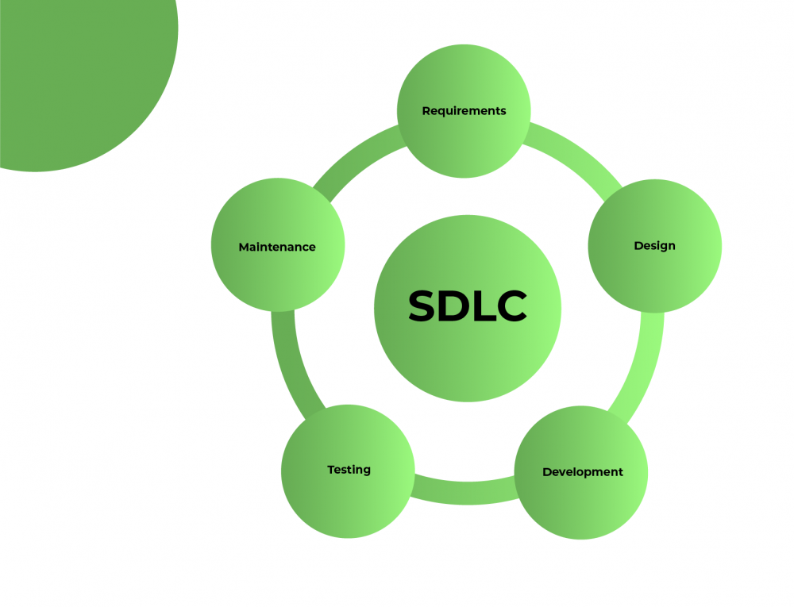

SDLC
Software Development Life Cycle (SDLC)
Software Development Life Cycle (SDLC) - це опис розробки програмного забезпечення від початку до
завершення.
SDLC забезпечує добре структурований потік етапів, які допомагають організації швидко створювати
високоякісне програмне
забезпечення, яке добре перевірено та готове до використання.
Як працює SDLC
SDLC працює, знижуючи вартість розробки програмного забезпечення, одночасно покращуючи якість і
скорочуючи час
виробництва. SDLC досягає цих, очевидно, різних цілей, дотримуючись плану, який усуває типові підводні
камені проектів
розробки програмного забезпечення. Цей план починається з оцінки наявних систем на наявність недоліків.
Далі він визначає вимоги до нової системи. Потім він створює програмне забезпечення на етапах аналізу,
планування,
проектування, розробки, тестування та розгортання. Передбачаючи дорогі помилки, як-от відсутність запиту
кінцевого
користувача або клієнта надати відгук, SLDC може усунути зайву переробку та постфактум виправлення.
Також важливо знати, що велика увага приділяється фазі тестування. Оскільки SDLC є повторюваною
методологією, ви повинні
гарантувати якість коду в кожному циклі. Багато організацій, як правило, витрачають небагато зусиль на
тестування, тоді
як більша зосередженість на тестуванні може заощадити їм багато часу та грошей. Будьте розумними та
пишіть правильні
типи тестів.
Етапи життєвого циклу розробки програмного забезпечення (SDLC):
Збір та аналіз вимог:
Етап аналізу та збору вимог, мабуть, один із найвідповідальніших етапів життєвого циклу ПЗ. На цьому етапі команда фахівців із командою замовників, а іноді навіть із потенційними споживачами майбутнього продукту, збирає всі деталі розробки проекту. Починаючи від маркетингових досліджень ринку, і закінчуючи визначенням стеку технологій та функціональністю майбутнього продукту. Вся ця інформація, за підсумком, записується в проектну документацію, на підставі якої формується графік та строки послідовних завдань та етапів розробки продуктів.
Дизайн:
Після того, як стали зрозумілі функціональні вимоги та стек технологій, можна переходити до проектування та дизайну. На цьому етапі розробники проектують майбутню архітектуру проекту у вибраній технології. Створюється адаптивний та юзабельний дизайн, продумується зв'язок front частини програми з сервером, розробляються модулі та продумується система безпеки ресурсу.
Розробка:
Стадія розробки - це етап, де вже фактично пишеться код. Технічні фахівці беруть проектну документацію,
прототипи,
дизайн та архітектуру, і на основі їх створюють майбутню програму або сайт. Завдання розділені між
членами команди
відповідно до їхньої галузі спеціалізації.
Розробники відповідають за створення інтерфейсу та його зв'язок із сервером. Адміністратори бази даних
додають необхідні
дані до бази. Front-end розробники створюють чуйний інтерфейс майбутнього веб-додатку. Результатом цього
етапу є
програмний продукт, що працює.
Тестування:
На цьому етапі команда порівнює задуманий додаток на етапі аналізу та збору вимог із тим, який створений після етапу розробки. Відповідає на запитання:
- Чи всі ці функції та інтеграції працюють правильно?
- Чи правильно відпрацьовують усі кнопки?
- Чи досягли того кінцевого результату, який було прописано у вимогах?
Якщо кінцевий додаток відпрацьовує не зовсім правильно, це буде виявлено на цьому етапі і віддано на доопрацювання програмістам. Після виправлення та налагодження продукту, він готовий до наступного етапу.
Підтримка:
Тепер проект переходить у режим технічного обслуговування. На цьому етапі відбувається постійна перевірка
працездатності
продукту, продуктивності системи, системи безпеки та старіння.
Технічні фахівці виправляють проблеми, які могли б виникнути у користувачів веб-ресурсу. Це може
включати обробку
залишкових помилок, які не вдалося виправити перед запуском, або вирішення нових проблем, що виникають
через звіти
користувачів. Великі проекти можуть вимагати триваліших етапів обслуговування порівняно з невеликими.
Переваги SDLC
Правильно виконана SDLC може забезпечити найвищий рівень управлінського контролю та документування.
Розробники
розуміють, що вони повинні будувати і навіщо. Усі сторони заздалегідь узгоджують ціль і бачать чіткий
план досягнення
цієї мети. Усі розуміють необхідні витрати та ресурси.
Кілька підводних каменів можуть перетворити реалізацію SDLC на перешкоду на шляху розробки, ніж на
інструмент, який нам
допомагає. Неврахування потреб клієнтів і всіх користувачів і зацікавлених сторін може призвести до
поганого розуміння
системних вимог на початку. Переваги SDLC існують лише за умови сумлінного дотримання плану.